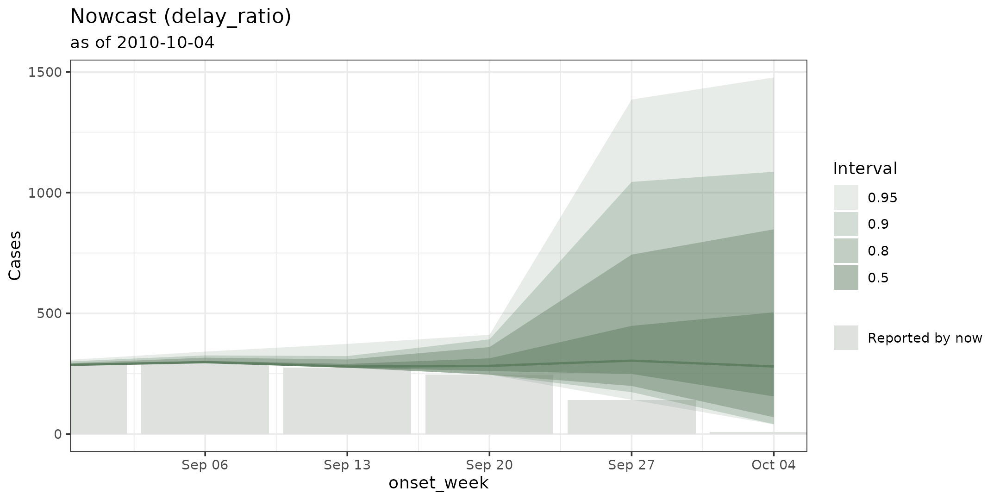

Adding your own nowcasting model
custom-nowcast-models.RmdThis was written automatically by an AI model. A human has yet to review.
run_nowcast(), nowcast_fit(),
nowcast_tidy() and the tbl_nowcast class are
experimental.
They work and they are tested, but the extension contract is the
youngest part of the package and is the part most likely to change. Pin
a version if you are building on it.
tbl.now ships back-ends for six nowcasting packages, and
vignette("ensemble-nowcasting") shows how to fit, score and
combine them through one call. This article is about the seventh model:
yours.
Everything below really runs. The model we build needs no Stan, no
JAGS and no modelling package at all — it is a hundred lines of
dplyr — which is the point: the contract is small enough
that a model you sketched on a napkin can be a first-class citizen of
the package by lunchtime.
1. The contract
run_nowcast(x, engine("mymodel", ...)) does exactly
three things:
- takes the engine — an object of class
c("mymodel", "nowcast_engine")carrying your arguments, built byengine(); - calls
nowcast_fit(method, x, ...)— run the model, return whatever it returns. The engine’s arguments arrive in that...; - calls
nowcast_tidy(method, fit, x, ..., quantile_levels)— describe that result in the one shape the rest of the package understands.
and wraps the answer in a tbl_nowcast. That is the whole
framework. Dispatch is ordinary S3, so the two methods can live
anywhere — your package, your analysis script, or a chunk in a
vignette like this one. Nothing inside tbl.now changes, and
nothing needs to be registered with it.
| you write | it receives | it must return |
|---|---|---|
nowcast_fit.mymodel() |
the tbl_now, your ...,
quantile_levels, verbose
|
anything at all — it is stored verbatim in
nowcast@fit
|
nowcast_tidy.mymodel() |
your fit, the tbl_now,
quantile_levels
|
list(predictions =, draws =) |
nowcast_tidy() returns a list with two slots, and
exactly one of them may be NULL:
| slot | one row per | columns |
|---|---|---|
predictions |
(event date, stratum, quantile level) |
<event_date>, the strata,
.quantile_level, .value
|
draws |
(event date, stratum, draw) |
<event_date>, the strata, .draw,
.value
|
Return draws when your model has them: the quantiles are
derived for you, and draws are what
nowcast_ensemble(type = "linear_pool") and
tidy(probs = ) need. Return predictions when
your model produces quantiles directly, which is the case for the one we
are about to write. You may return both.
The engine’s arguments reach nowcast_fit(), not
nowcast_tidy(). run_nowcast() splices
them into the fitting step only; the tidying step is called with the
fit, the object and quantile_levels. Anything the tidy step
needs — a number of draws, a tuning parameter, a lookup table — must be
stored in the object nowcast_fit()
returns. That is not a limitation so much as the reason the fit
is kept verbatim.
Your backend gets engine() for free, and can
have its own constructor.
engine("mymodel", window = 12) works the moment
nowcast_fit.mymodel() is registered — there is nothing to
declare. If you are shipping the backend in a package, write an
engine_mymodel() alongside it that names your arguments,
the way engine_nobbs() names max_D and
moving_window: a named formal is discoverable from the
signature and a typo in one is an error, where a typo in
... is a default nobody notices.
engine_mymodel <- function(..., window = 12,
min_date = NULL,
quantile_levels = nowcast_quantile_levels(),
label = NULL) {
engine("mymodel", window = window, ...,
min_date = min_date, quantile_levels = quantile_levels, label = label)
}2. Reading the tbl_now correctly
Your nowcast_fit() method is handed the whole
tbl_now. Almost every bug in a back-end comes from assuming
something about it that is not guaranteed.
Never hard-code a column name. The event-date column
is called onset_week in denguedat,
dx_date in mpoxdat and
reference_date in an epinowcast import.
Ask:
get_event_date(x) # name of the event-date column
get_report_date(x) # name of the report-date column
get_case_count(x) # name of the counts column, or NULL for a line list
get_strata(x) # character vector, or NULL
get_covariates(x) # character vector, or NULL
get_now(x) # the as-of Date
get_event_units(x) # "days" | "weeks" | "months" | "years" | "numeric"
get_data_type(x) # "linelist" | "count-incidence" | "count-cumulative"Three protected numeric columns are always present, and they are usually what you actually want to compute on:
| column | meaning |
|---|---|
.event_num |
the event date as an integer number of report units from
min(event_date)
|
.report_num |
the report date, on the same scale |
.delay |
.report_num - .event_num — the reporting delay, in
report units |
Working in .event_num / .delay means your
model does not care whether the data is daily, weekly or monthly, and
does not have to do calendar arithmetic.
Handle the three data types, or refuse one
explicitly. A line list has no counts column and one row per
case; "count-incidence" counts what was newly
reported in a cell; "count-cumulative" counts what had been
reported so far. Do not write three branches — call
to_count() and be handed the one you want:
x <- to_count(x, to = "count-incidence")Remember that cumulative → incidence de-accumulates, so
a downward revision becomes a negative increment. If
your model cannot represent that, say so rather than silently taking a
maximum. (tbl_now_to_baselinenowcast() refuses cumulative
input for exactly this reason.)
A zero is not the same as a missing row. A
tbl_now only carries cells that were reported, so an event
date with no reports has no rows at all, and a model that builds its
time grid from the rows it was handed will quietly stop short of
now — which is precisely where a nowcast matters.
complete_zeroes() fills the grid out to now
for count data:
x <- complete_zeroes(x)For a line list this cannot work — a zero-count row expands to zero
rows — so the grid has to come from somewhere else. The built-in
"surveillance" back-end does this by passing an explicit
control$dRange.
now is a declaration, not
max(report_date). Use get_now(x). An
object whose reporting has stalled has a now later than its
last report, and that gap is real information about the nowcast, not an
error to round away.
3. Don’t reshape by hand: the converters
If your model is a wrapper around another package, or wants a
reporting triangle, a delay-interval frame or a tsibble,
that work is already done and already tested against all three data
types, all four time units and the now edge:
tbl_now_to_baselinenowcast(x, format = "matrix") # reporting triangle
tbl_now_to_epinowcast(x) # long, cumulative, preprocessed
tbl_now_to_EpiNow2(x, target = "estimate_infections")
tbl_now_to_nobbs(x) # line list, one row per case
tbl_now_to_surveillance(x)
tbl_now_to_epidist(x, format = "interval") # censored delay intervals
tbl_now_to_tsibble(x)
tbl_now_to_data_table(x)They also pool the columns you never declared, so case totals survive the trip, and they collapse a per-case censoring flag with a warning rather than putting two rows in a triangle cell that has one slot.
The arrow points both ways. as_tbl_now() has a method
for every one of those outputs, plus the raw inputs of the packages
themselves, so a foreign object comes back into tbl.now
without you writing the mapping:
triangles <- tbl_now_to_baselinenowcast(x, format = "triangle_list")
as_tbl_now(triangles) # back to a tbl_now, strata recodedIf you find yourself writing a pivot_wider() to build a
triangle, stop: one of the converters already did it, and it handled the
case you were about to get wrong.
4. A worked example: the delay-ratio nowcast
The idea
Write C(t, d) for the number of cases with event date t that had been reported within a delay of d periods, and let D be the delay past which we are willing to call reporting finished. For an event date old enough that all D periods have elapsed — call it mature — we can see the whole story: how much of the eventual total was visible at each delay.
The ratio
r_t(d) \;=\; \frac{C(t, D)}{C(t, d)}
is the factor by which the count observed at delay d eventually grew. Collect it over every mature event date and you have an empirical distribution of multipliers for each delay. The nowcast for a young event date t, observed so far at delay d(t) = \mathrm{now} - t, is then its current count scaled by that distribution:
\hat q_\alpha(t) \;=\; C\big(t, d(t)\big) \cdot \mathrm{Quantile}_\alpha\Big(\big\{\, r_s(d(t)) : s \text{ mature} \,\big\}\Big).
The median multiplier gives the point estimate. The rest of the empirical quantiles give the uncertainty — no distribution is assumed anywhere, which is the appeal: the spread of the intervals is the spread of what reporting has actually done in the past.
This is the oldest idea in nowcasting (it is the chain-ladder of actuarial reserving, wearing an epidemiological hat), and it is a genuinely useful baseline. It also has two honest weaknesses that will show up in the output, and we will come back to them.
The data
Dengue in Puerto Rico: a weekly line list, aggregated to counts. We nowcast as of a date in the past so that there are later reports to score against.
data(denguedat)
dengue <- denguedat |>
filter(onset_week >= as.Date("2008-01-01")) |>
count(onset_week, report_week, name = "n") |>
tbl_now(
event_date = onset_week,
report_date = report_week,
case_count = n,
data_type = "count-incidence",
verbose = FALSE
)
now <- as.Date("2010-10-04")
snapshot <- dengue |>
filter(report_week <= now) |>
change_now(now = now)
get_now(snapshot)
#> [1] "2010-10-04"snapshot is what the model may see; dengue
still holds the reports that arrived afterwards, and is the truth we
will score against.
nowcast_fit.delay_ratio()
The fitting step estimates the multiplier pool. Notice how much of it is spent asking the object about itself rather than doing arithmetic.
nowcast_fit.delay_ratio <- function(engine, x, ..., max_delay = NULL,
quantile_levels, verbose = TRUE) {
event_col <- get_event_date(x)
strata <- get_strata(x)
if (is.null(strata)) strata <- character(0)
key <- c(event_col, strata)
# How far out we model. Past `max_delay` the model calls reporting finished.
max_delay <- if (is.null(max_delay)) max(x$.delay) else max_delay
delay_grid <- seq(min(x$.delay), max_delay)
# C(t, d) for every event date and every delay on the grid. This getter does
# the cumulating, the strata and the three data types for us.
snapshot_at <- function(d) {
snapshot <- get_nth_reported_cases(x, delay = d)
count_col <- get_case_count(snapshot)
if (is.null(count_col)) count_col <- "n"
as_tibble(snapshot) |>
summarise(.reported = sum(.data[[count_col]]), .by = all_of(key)) |>
mutate(.delay_grid = d)
}
snapshots <- bind_rows(lapply(delay_grid, snapshot_at))
# Work on the integer grid, not the calendar: `.event_num` and `.report_num`
# are already in report units, so this is unit-agnostic.
index <- distinct(as_tibble(x), across(all_of(event_col)), .event_num)
now_index <- max(x$.report_num)
eventual <- snapshots |>
filter(.delay_grid == max_delay) |>
select(all_of(key), .eventual = ".reported")
ratios <- snapshots |>
filter(.delay_grid < max_delay) |>
inner_join(eventual, by = key) |>
inner_join(index, by = event_col) |>
# Mature dates only: a date still filling in would teach the model that
# reporting stops early. And a ratio needs a non-zero denominator.
filter(.event_num + max_delay <= now_index, .reported > 0) |>
mutate(.ratio = .eventual / .reported) |>
select(all_of(strata), ".delay_grid", ".ratio")
if (isTRUE(verbose)) {
n_delays <- n_distinct(ratios$.delay_grid)
cli::cli_alert_info(
"Estimated {nrow(ratios)} multiplier{?s} over {n_delays} delay{?s}."
)
}
list(
ratios = ratios,
max_delay = max_delay,
index = index,
now_index = now_index
)
}Two things to note. The returned list is the fit —
it is kept verbatim in nowcast@fit, and it carries
index and now_index because the tidying step
will need them and ... does not reach that far. And
verbose is honoured, because a back-end that talks when it
is told to and is silent when it is not is one that can be used inside
nowcast_backtest() without flooding the console.
nowcast_tidy.delay_ratio()
The tidying step applies the pool. This model produces quantiles
directly, so it fills predictions and leaves
draws as NULL.
nowcast_tidy.delay_ratio <- function(engine, fit, x, ..., quantile_levels) {
event_col <- get_event_date(x)
strata <- get_strata(x)
if (is.null(strata)) strata <- character(0)
key <- c(event_col, strata)
# What each event date has reported as of `now`, and how old it is.
latest <- get_latest_reported_cases(x)
count_col <- get_case_count(latest)
if (is.null(count_col)) count_col <- "n"
current <- as_tibble(latest) |>
summarise(.reported = sum(.data[[count_col]]), .by = all_of(key)) |>
inner_join(fit$index, by = event_col) |>
mutate(.delay_grid = pmin(fit$now_index - .event_num, fit$max_delay))
# The empirical quantiles of the multiplier, per delay (and per stratum).
# The 0.5 row is the median multiplier: the point estimate.
multipliers <- fit$ratios |>
reframe(
.quantile_level = quantile_levels,
.multiplier = quantile(.ratio, quantile_levels, names = FALSE),
.by = all_of(c(strata, ".delay_grid"))
)
predictions <- current |>
cross_join(tibble(.quantile_level = quantile_levels)) |>
left_join(multipliers, by = c(strata, ".delay_grid", ".quantile_level")) |>
# No multiplier means nothing left to correct: a mature date, or a delay the
# history never showed us. Either way the honest factor is 1.
mutate(
.multiplier = coalesce(.multiplier, 1),
.value = .reported * .multiplier
) |>
select(all_of(key), ".quantile_level", ".value")
list(predictions = predictions, draws = NULL)
}That is the entire back-end: two functions, no registration, no
tbl.now change.
Running it
nowcast <- run_nowcast(
snapshot,
engine("delay_ratio", max_delay = 8),
verbose = FALSE
)
nowcast
#> ── A <tbl_nowcast> from method "delay_ratio" ───────────────────────────────────
#> • now: "2010-10-04"
#> • event dates: 144
#> • quantile levels: 0.025, 0.05, 0.1, 0.25, 0.5, 0.75, 0.9, 0.95, and 0.975
#> • draws: none (quantiles only)
#>
#> Nowcast at "2010-10-04" (q50, 2.5-97.5% interval):
#> • 280 [40, 1,476.8]
#>
#> # A tibble: 6 × 3
#> onset_week .quantile_level .value
#> <date> <dbl> <dbl>
#> 1 2008-01-07 0.025 22
#> 2 2008-01-07 0.05 22
#> 3 2008-01-07 0.1 22
#> 4 2008-01-07 0.25 22
#> 5 2008-01-07 0.5 22
#> 6 2008-01-07 0.75 22
#> ℹ 1290 more rows. Use `as_tibble()` for all of them.The fit is kept, so the multiplier pool is there to look at — and the median multiplier by delay is the model, in one table:
nowcast@fit$ratios |>
summarise(
n = n(),
median = round(median(.ratio), 2),
q10 = round(quantile(.ratio, 0.1), 2),
q90 = round(quantile(.ratio, 0.9), 2),
.by = .delay_grid
) |>
arrange(.delay_grid)
#> # A tibble: 8 × 5
#> .delay_grid n median q10 q90
#> <int> <int> <dbl> <dbl> <dbl>
#> 1 0 49 35 8.72 106
#> 2 1 134 2.14 1.4 5.23
#> 3 2 135 1.15 1 1.46
#> 4 3 136 1.02 1 1.12
#> 5 4 136 1 1 1.06
#> 6 5 136 1 1 1.02
#> # ℹ 2 more rowsRead it from the bottom up. By delay three a week’s count is within a couple of percent of its eventual total, and by delay four it is done. At delay one it typically doubles. At delay zero it multiplies by thirty-five — and only 49 of the 136 mature weeks ever had a delay-zero report at all, so that row rests on a third of the data and its 10–90% range runs from 8.7 to 106.
Those q10/q90 columns are the entire
uncertainty model: no distribution is assumed anywhere, the intervals
are just what reporting has actually done before. And that top row is
why the fan below opens so violently at the last week, which is the
model telling the truth rather than misbehaving.
5. What you get for free
The point of implementing the contract rather than writing a bespoke function is everything in this section, none of which needed a line of extra code.
tidy() — the same table every other
engine tidies into:
tidy(nowcast) |> tail(5)
#> # A tibble: 5 × 7
#> event_date stratum estimate conf.low conf.high level engine
#> <date> <chr> <dbl> <dbl> <dbl> <dbl> <chr>
#> 1 2010-09-06 all 298 298 342. 0.95 delay_ratio
#> 2 2010-09-13 all 279. 275 373. 0.95 delay_ratio
#> 3 2010-09-20 all 282. 246 411. 0.95 delay_ratio
#> 4 2010-09-27 all 304. 142 1385. 0.95 delay_ratio
#> 5 2010-10-04 all 280 40 1477. 0.95 delay_ratioautoplot() — the fan chart, with the
counts reported by now drawn underneath, so the gap is the
correction the model is making:
ggplot2::autoplot(nowcast) +
ggplot2::coord_cartesian(
xlim = as.Date(c("2010-04-01", "2010-10-11")),
ylim = c(0, 800)
)
score_nowcast() — the weighted interval
score, the absolute error of the median, and interval coverage, against
the data the model never saw:
score_nowcast(nowcast, truth = dengue) |> tail(5)
#> # A tibble: 5 × 7
#> .method onset_week .observed wis ae_median coverage_50 coverage_90
#> <chr> <date> <dbl> <dbl> <dbl> <lgl> <lgl>
#> 1 delay_ratio 2010-09-06 298 1.26 0 TRUE TRUE
#> 2 delay_ratio 2010-09-13 275 3.20 4.49 TRUE TRUE
#> 3 delay_ratio 2010-09-20 250 14.1 32.4 FALSE TRUE
#> 4 delay_ratio 2010-09-27 201 61.9 103. FALSE TRUE
#> 5 delay_ratio 2010-10-04 147 73.0 133 FALSE TRUEThis is where the model’s two honest weaknesses appear. The fan
widens sharply at the now edge, because a multiplier
estimated at delay 0 is estimated from very few reports and is
enormously variable — and the point estimate drifts high, because a
multiplier pooled over two and a half years remembers an epidemic that
was growing while these last weeks were shrinking. The intervals cover;
the median does not lead. That is a real property of this estimator, not
a bug in the example, and it is exactly what you would want a backtest
to tell you.
list_nowcast_methods() finds it,
because it scans the S3 methods registered for
nowcast_fit() in every loaded namespace:
list_nowcast_methods(installed_only = FALSE)
#> [1] "baselinenowcast" "delay_ratio" "diseasenowcasting"
#> [4] "EpiNow2" "epinowcast" "example"
#> [7] "NobBS" "surveillance"nowcast_backtest() refits it at a
series of past dates and scores each one. It takes engines, so
max_delay travels with the model that needs it rather than
in an outer ... that has to be routed to the right backend
by name:
backtest <- nowcast_backtest(
dengue,
engine("delay_ratio", max_delay = 8),
now_dates = as.Date(c("2010-07-05", "2010-08-02", "2010-09-06")),
seed = 20260827,
verbose = FALSE
)
tidy(backtest) |>
summarise(mean_wis = round(mean(wis, na.rm = TRUE), 2), .by = now)
#> # A tibble: 3 × 2
#> now mean_wis
#> <date> <dbl>
#> 1 2010-07-05 0.49
#> 2 2010-08-02 0.78
#> 3 2010-09-06 1.81nowcast_ensemble() treats it exactly
like a packaged method — which we can show once there is a second
member.
6. The other branch: returning draws
Our model has an empirical pool of multipliers, so it can just as
well resample it. That gives draws instead of quantiles, and
draws unlock the two things quantiles cannot do:
type = "linear_pool" ensembles, and
tidy(probs =) at arbitrary levels.
The fitting step is unchanged, so reuse it — this is ordinary S3, and a method is just a function:
nowcast_fit.delay_ratio_boot <- function(engine, x, ..., n_draws = 1000,
quantile_levels, verbose = TRUE) {
fit <- nowcast_fit.delay_ratio(
method, x, ..., quantile_levels = quantile_levels, verbose = verbose
)
# `...` never reaches `nowcast_tidy()`, so `n_draws` travels in the fit.
fit$n_draws <- n_draws
fit
}
nowcast_tidy.delay_ratio_boot <- function(engine, fit, x, ..., quantile_levels) {
event_col <- get_event_date(x)
strata <- get_strata(x)
if (is.null(strata)) strata <- character(0)
key <- c(event_col, strata)
latest <- get_latest_reported_cases(x)
count_col <- get_case_count(latest)
if (is.null(count_col)) count_col <- "n"
current <- as_tibble(latest) |>
summarise(.reported = sum(.data[[count_col]]), .by = all_of(key)) |>
inner_join(fit$index, by = event_col) |>
mutate(.delay_grid = pmin(fit$now_index - .event_num, fit$max_delay))
pool <- fit$ratios
draws <- current |>
cross_join(tibble(.draw = seq_len(fit$n_draws))) |>
mutate(
.multiplier = vapply(.delay_grid, function(d) {
available <- pool$.ratio[pool$.delay_grid == d]
if (length(available) == 0) 1 else sample(available, 1)
}, numeric(1)),
.value = .reported * .multiplier
) |>
select(all_of(key), ".draw", ".value")
list(predictions = NULL, draws = draws)
}predictions is NULL, and
run_nowcast() derives the quantiles from the draws:
set.seed(20260827)
bootstrapped <- run_nowcast(
snapshot,
engine("delay_ratio_boot", max_delay = 8, n_draws = 2000),
verbose = FALSE
)
bootstrapped
#> ── A <tbl_nowcast> from method "delay_ratio_boot" ──────────────────────────────
#> • now: "2010-10-04"
#> • event dates: 144
#> • quantile levels: 0.025, 0.05, 0.1, 0.25, 0.5, 0.75, 0.9, 0.95, and 0.975
#> • draws: 2000
#>
#> Nowcast at "2010-10-04" (q50, 2.5-97.5% interval):
#> • 280 [40, 1,544]
#>
#> # A tibble: 6 × 3
#> onset_week .quantile_level .value
#> <date> <dbl> <dbl>
#> 1 2008-01-07 0.025 22
#> 2 2008-01-07 0.05 22
#> 3 2008-01-07 0.1 22
#> 4 2008-01-07 0.25 22
#> 5 2008-01-07 0.5 22
#> 6 2008-01-07 0.75 22
#> ℹ 1290 more rows. Use `as_tibble()` for all of them.Because there are draws, tidy() will compute any
quantile you ask for:
tidy(bootstrapped, probs = c(0.1, 0.9)) |> tail(3)
#> # A tibble: 3 × 9
#> event_date stratum estimate conf.low conf.high level engine q10 q90
#> <date> <chr> <dbl> <dbl> <dbl> <dbl> <chr> <dbl> <dbl>
#> 1 2010-09-20 all 280. 246 482. 0.95 delay_ratio_… 246 361.
#> 2 2010-09-27 all 296. 142 1420 0.95 delay_ratio_… 194. 786.
#> 3 2010-10-04 all 280 40 1544 0.95 delay_ratio_… 48 880On the quantile-only version the same call is an error, not an approximation — which is the behaviour you want from a package that is about to tell you how uncertain something is:
tidy(nowcast, probs = c(0.1, 0.9))
#> Error in `.reject_probs()`:
#> ! delay_ratio does not keep posterior draws, so `probs` cannot be
#> honoured.
#> ℹ It reports a fixed set of summaries; returning anything else would be an
#> approximation dressed up as a quantile.
#> ℹ Draws are available from diseasenowcasting, baselinenowcast and epinowcast.And the two versions ensemble with each other, or with any packaged method:
ensemble <- nowcast_ensemble(
median = nowcast,
bootstrap = bootstrapped,
name = "ratio-ensemble"
)
#> ℹ Combining 2 nowcasts (quantile) with weights "median = 0.5" and "bootstrap = 0.5".
tidy(ensemble) |> tail(3)
#> # A tibble: 3 × 7
#> event_date stratum estimate conf.low conf.high level engine
#> <date> <chr> <dbl> <dbl> <dbl> <dbl> <chr>
#> 1 2010-09-20 all 281. 246 447. 0.95 ratio-ensemble
#> 2 2010-09-27 all 300. 142 1403. 0.95 ratio-ensemble
#> 3 2010-10-04 all 280 40 1510. 0.95 ratio-ensembleThey agree closely, which is the correct answer and a useful check: resampling an empirical distribution and taking its quantiles are two routes to the same estimator, and the two branches of the contract should not disagree about it.
7. Strata
get_strata(x) was threaded through both methods, so a
stratified object needs nothing new — one multiplier pool is estimated
per stratum:
dengue_by_sex <- denguedat |>
filter(onset_week >= as.Date("2008-01-01")) |>
count(onset_week, report_week, gender, name = "n") |>
tbl_now(
event_date = onset_week,
report_date = report_week,
case_count = n,
strata = gender,
data_type = "count-incidence",
verbose = FALSE
) |>
filter(report_week <= now) |>
change_now(now = now)
stratified <- run_nowcast(
dengue_by_sex,
engine("delay_ratio", max_delay = 8),
verbose = FALSE
)
tidy(stratified) |> tail(4)
#> # A tibble: 4 × 7
#> event_date stratum estimate conf.low conf.high level engine
#> <date> <chr> <dbl> <dbl> <dbl> <dbl> <chr>
#> 1 2010-09-13 Male 147 147 191. 0.95 delay_ratio
#> 2 2010-09-20 Male 155. 134 265. 0.95 delay_ratio
#> 3 2010-09-27 Male 154. 71 773. 0.95 delay_ratio
#> 4 2010-10-04 Male 69 9.9 468. 0.95 delay_ratioWhatever strata columns you put on the output are what the result
reports as its strata, and score_nowcast() and
nowcast_ensemble() key on them.
If your model cannot honour strata, warn and pool —
do not pretend. The packaged back-ends show both ways out:
"baselinenowcast" and "surveillance" fit one
model per stratum, while "NobBS" and "EpiNow2"
are given the interaction of the declared columns as a single
pasted label, which is split back into columns on the way out. If you
paste labels yourself, refuse the paste when a stratum value already
contains your separator: splitting it back ambiguously attaches a
nowcast to the wrong stratum with no error at all.
8. Shipping it as a package
Everything above worked from the global environment. To put it in a package:
-
Register both methods. With roxygen,
@exportonnowcast_fit.mymodel()andnowcast_tidy.mymodel(); by hand,S3method(nowcast_fit, mymodel)andS3method(nowcast_tidy, mymodel)inNAMESPACE. Because dispatch is ordinary S3, they are visible the moment your package is loaded, andlist_nowcast_methods()picks them up. -
Put
tbl.nowinImportsand import the generics you extend (@importFrom tbl.now nowcast_fit nowcast_tidy), along with the getters you call. -
Put the modelling package in
Suggests, and check for it at fit time withrequireNamespace(..., quietly = TRUE), so installing your package does not drag in a Stan or JAGS toolchain. -
Reuse
tidy()if that package already has a method for its own fits. The built-in"surveillance"and"EpiNow2"back-ends do exactly this:tidy()already knows how to find their interval and how wide it is, and re-deriving that in a second place is how two real bugs got in. -
Give it an
engine_mymodel().engine("mymodel", ...)already works; a constructor that names your arguments makes them discoverable and turns a typo into an error. See section 1. -
Test the fit and the tidy separately.
engine("mymodel")builds the dispatch object, sonowcast_tidy(engine("mymodel"), fit, x, quantile_levels = c(0.1, 0.5, 0.9))can be tested against a stored fit without refitting anything. -
Test against more than one shape. A line list and a
count-cumulativeobject with weekly dates and two strata will find the assumptions a daily incidence tibble never does.
A checklist for the method itself:
9. Getting it into tbl.now itself
A back-end does not have to live in
tbl.now to be a first-class citizen — that is the whole
design. But if you think a model belongs in the package, or you have
written one and would like it maintained here:
Open an issue at github.com/rodrigozepeda/tbl.now/issues before writing a pull request.
Please say in the issue:
- which modelling package the back-end wraps, and where it lives
(CRAN, GitHub, r-universe) — this decides whether it can be a
Suggestsat all; - what it needs at install time: a Stan toolchain, JAGS, or nothing;
- how it handles strata — jointly, one fit per stratum, or not at all;
- whether it produces draws or only quantiles and a single interval;
- a minimal example that fits on one of the packaged datasets
(
denguedat,mpoxdat,covid_colombia,covid_us,flusight,hai_bucaramanga).
An issue first is not bureaucracy: a new back-end also needs a
converter, a section in vignette("nowcasting-models")
showing both the plain and the stratified fit, a row in the converter
matrix, and an entry in the model comparison. It is much easier to agree
on the shape of all that before the code is written than after.
Bug reports and back-ends that should stay in your own package are equally welcome as issues — if a getter you needed does not exist, or a converter got your data type wrong, that is the same address.
See also
-
vignette("ensemble-nowcasting")—run_nowcast(), scoring, backtesting and ensembles across the packaged methods. -
vignette("nowcasting-models")— the same six packages driven by hand through the converters. -
?nowcast_fitand?nowcast_tidy— the contract in reference form. -
?tbl_nowcast— the object your two methods are turned into. -
?tidy.tbl_nowcast,?score_nowcast,?nowcast_ensemble.